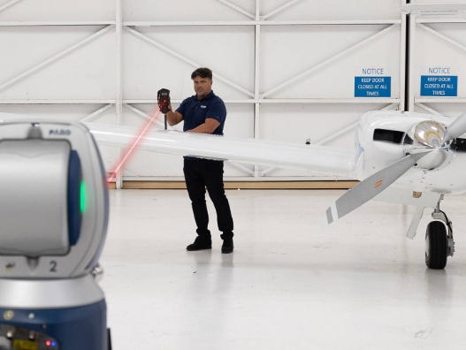

대형 구조물과 생산설비의 정밀 측정을 위한 고정밀 3D 계측 솔루션

Vantage Laser Tracker는 대형 부품, 생산설비, 구조물의 위치와 형상을 고정밀로 측정하기 위한 3D 계측 솔루션입니다.
자동차, 항공우주, 조선, 중공업, 로봇 셀 등 넓은 측정 범위와 높은 정밀도가 필요한 산업 현장에서 활용할 수 있습니다.
기존 측정 방식으로 접근하기 어려운 대형 부품과 설비를 현장에서 직접 측정하여 검사 시간을 줄이고 품질 관리를 강화할 수 있습니다.
생산설비, 지그, 대형 구조물의 위치와 정렬 상태를 정밀하게 확인하여 설치 오차와 재작업 가능성을 줄일 수 있습니다.
로봇 셀의 위치 정확도, 반복 정밀도, 경로 정확도 등을 측정하여 자동화 설비의 신뢰성 향상에 활용할 수 있습니다.
Laser Tracker는 대형 제품의 정렬, 조립 검증, 품질 검사 및 로봇 캘리브레이션 분야에 적용할 수 있습니다.
현장에서 장비를 이동하여 측정할 수 있어 대형 구조물이나 생산라인처럼 고정형 측정 장비를 사용하기 어려운 환경에서도 활용도가 높습니다.